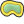

.
Configuration de KADAS¶
KADAS se configure via le menu Préférences ‣. Les Panneaux, Barres d’outils, Propriétés du Projet, Options et Personnalisation s’y configurent.
Note
KADAS suit les indications des systèmes d’exploitations pour définir la localisation des options et des propriétés du projet. En fonction de votre Système d’Opération, les adresses des éléments décrits ci-dessus peuvent se situer dans le menu Vue (panneaux et barres d’outils) ou dans Projet pour les options.
Panneaux et barres d’outils¶
Dans le menu Panneaux‣, vous pouvez afficher ou cacher les panneaux. De même pour les barres d’outils avec le menu Barres d’outils‣ (voir figure_panels_toolbars).
Figure Panels and Toolbars:

Les menus Panneaux et Barre d’outils 
Astuce
Activer la fenêtre d’aperçu
Dans KADAS, vous avez la possibilité de visualiser la totalité de l’étendue des couches en les ajoutant à l’aperçu. La fenêtre d’aperçu s’affiche via le menu Préférences ‣ Panneaux ou  Vue‣ Panneaux . Au sein de cette fenêtre se situe un rectangle qui représente l’étendue de la carte, cela permet de savoir quelle région de la carte vous êtes en train de visualiser. Les étiquettes ne sont pas affichées dans l’aperçu même si les couches visibles ont l’étiquetage activé. Si vous cliquez et déplacez le rectangle rouge qui montre votre emprise actuelle, la vue principale se mettra à jour en conséquence.
Vue‣ Panneaux . Au sein de cette fenêtre se situe un rectangle qui représente l’étendue de la carte, cela permet de savoir quelle région de la carte vous êtes en train de visualiser. Les étiquettes ne sont pas affichées dans l’aperçu même si les couches visibles ont l’étiquetage activé. Si vous cliquez et déplacez le rectangle rouge qui montre votre emprise actuelle, la vue principale se mettra à jour en conséquence.
Astuce
Voir le journal des messages
Il est possible de suivre les messages produits par KADAS. Activez cette fonctionnalité en cochant  Journal des messages dans le menu Préférences‣ Panneaux ou Vue ‣ Panneaux et retrouvez les messages dans les différents onglets lors du chargement de données ou de l’exécution d’opérations.
Journal des messages dans le menu Préférences‣ Panneaux ou Vue ‣ Panneaux et retrouvez les messages dans les différents onglets lors du chargement de données ou de l’exécution d’opérations.
Propriétés du projet¶
Dans la fenêtre des propriétés du projet du menu Préférences ‣ Propriétés du projet (kde) ou Projet‣ Propriétés du projet (Gnome), vous pouvez définir les options spécifiques à un projet. Cela inclut :
Dans le menu Général, le titre du projet, la couleur de la sélection et du fond, les unités des couches et leur précision, ainsi que la possibilité de sauvegarder les chemins des couches en relatif peuvent être définis. Si la transformation du SCR est activée, vous pouvez choisir l’ellipsoïde pour la mesure des distances. Vous pouvez définir les unités de la carte (utilisé seulement si la transformation de SCR est désactivé) et la précision des décimaux. Vous pouvez également définir une liste d’échelles de projet, qui se substitue aux échelles prédéfinies globalement.
Le menu SCR vous permet de choisir le Système de Coordonnées de Référence pour le projet et d’activer la projection à la volée des couches raster et vecteur définies dans un SCR différent.
Avec le troisième menu Identification des couches, vous définissez (ou désactivez) les couches qui réagiront à l’outil d’identification (voir le paragraphe sur les outils cartographiques de la section Options pour l’identification de couches multiples).
Le menu Styles par défaut vous permet de contrôler comment les nouvelles couches seront représentées lorsqu’elles ne disposent pas d’un style .qml prédéfini. Vous pouvez aussi définir leur niveau de transparence par défaut et si les symboles devraient avoir des couleurs attribuées au hasard. Une zone permet également de spécifier des couleurs pour le projet en cours. Vous retrouverez les couleurs ajoutées dans un menu déroulant de la fenêtre de choix des couleurs.
L’onglet Serveur OWS vous permet de définir les informations concernant les capacités WMS et WFS de KADAS Server, l’étendue et de restreindre les SCR.
Le menu Macros permet d’éditer des modules Python pour les projets. Actuellement, seules trois macros sont disponibles : openProject(), saveProject() et closeProject().

Paramètres des macros dans KADAS
L’onglet Relations permet de définir des relations 1:n. Les relations sont définies dans la fenêtre des propriétés du projet. Une fois les relations définies sur une couche, un nouvel élément apparaît dans la vue formulaire de cette couche (par exemple, lors de l’identification d’une entité et l’ouverture du formulaire associé) et vous liste les entités qui lui sont reliées. Ceci fournit un moyen puissant d’exprimer, par exemple, l’historique d’inspection le long d’une pipeline ou d’un tronçon de route. Vous trouverez de plus amples informations sur les relation 1:n dans la section vector_relations.
Options¶
 Quelques options basiques peuvent être sélectionnées dans la fenêtre Options via le menu Préférences ‣ Options. Les onglets dans lesquels vous pouvez configurer les options sont décrits ci-dessous.
Quelques options basiques peuvent être sélectionnées dans la fenêtre Options via le menu Préférences ‣ Options. Les onglets dans lesquels vous pouvez configurer les options sont décrits ci-dessous.
Onglet Général¶
Application
Sélectionnez Style (redémarrage de QGIS nécessaire)
 et choisissez entre ‘Oxygen’, ‘Windows’, ‘Motif’, ‘CDE’, ‘Plastique’ ou ‘Cleanlooks’ ().
et choisissez entre ‘Oxygen’, ‘Windows’, ‘Motif’, ‘CDE’, ‘Plastique’ ou ‘Cleanlooks’ ().Définissez le Thème d’Icône
. Actuellement seul le thème ‘default’ est disponible.Définissez la Taille de l’icône
.Définissez la Police et choisissez entre
 Défaut Qt et une police de votre choix.
Défaut Qt et une police de votre choix.Changez le Délai d’abandon pour les messages ou les fenêtres
.- Cacher l’écran de démarrage
- Montrer les astuces au démarrage
- Titre des groupes de couches en gras
- Style QGIS pour les groupes de couches
- Utiliser les fenêtres natives de choix de couleur
- Fenêtres de choix de couleur avec mise à jour dynamique
- Style personnalisé de la barre latérale
- Rotation du canevas de la carte (expérimental, redémarrage requis)
Fichiers projet
Ouverture du projet au démarrage
(choisissez entre ‘Nouveau’, ‘Dernier utilisé’ et ‘Spécifique’). Lorsque vous choisissez ‘Spécifique’, utilisez le bouton  pour sélectionner un projet.
pour sélectionner un projet.- Créer les nouveaux projets à partir du projet par défaut. Vous pouvez choisir d’Utiliser le projet courant comme défaut ou de Réinitialiser le projet par défaut. Vous pouvez parcourir vos fichiers et sélectionner le répertoire où sont stockés vos modèles de projets personnalisés. Cela créera une nouvelle entrée dans le menu Projet ‣ Nouveau depuis un modèle si vous cochez Créer les nouveaux projets à partir du projet par défaut et sauvegardez un projet dans le répertoire de modèles de projets spécifié.
- Demander de sauver le projet et les sources de données quand nécessaire
- Demander une confirmation lorsqu’une couche va être supprimée
- M’avertir lors de l’ouverture d’un fichier projet sauvegardé avec une version précédente de QGIS
Activer les macros
. Cette option a été créée pour gérer les macros devant exécuter des actions sur des événements du projet. Vous pouvez choisir entre ‘Jamais’, ‘Demander’, ‘Uniquement pour cette session’ et ‘Toujours (non recommandé)’.
Menu Système¶
Environnement
Les variables d’environnement Système peuvent maintenant être visualisées et configurées pour certains dans le groupe Environnement (voir figure_environment_variables). Ceci est pratique sur certaines plateformes, notamment sur Mac, ou une application avec interface graphique n’hérite pas nécessairement des paramètres de l’environnement en ligne de commande de l’utilisateur. Ceci est aussi utile pour paramétrer/visualiser les variables d’environnement des outils externes contrôlés par la boîte à outils de traitement (par exemple SAGA, GRASS) et activer les sorties de débogage pour des sections spécifiques du code source.
- Utiliser des variables personnalisées (redémarrage requis - inclure des séparateurs). Vous pouvez [Ajouter] et [Supprimer] des variables. Les variables d’environnement déjà définies sont affichées dans Variables d’environnement courantes, et il est possible de les filtrer en activant Afficher uniquement les variables liées à QGIS.
Figure System Environment:

Variables d’environnement Système dans KADAS
Chemins vers les extensions
[Ajouter] ou [Supprimer] un ou des Chemin(s) vers des extensions C++ supplémentaires
Onglet Sources de données¶
Attributs et tables
- Ouvrir la table d’attributs dans une fenêtre intégrée (redémarrage requis)
- Copier la représentation WKT de la géométrie depuis la table attributaire. Lorsque vous utilisez
 Copier les lignes choisies dans le presse-papier depuis la fenêtre Table attributaire, cette option permet de recopier aussi les coordonnées des points ou des vertex dans le presse-papier.
Copier les lignes choisies dans le presse-papier depuis la fenêtre Table attributaire, cette option permet de recopier aussi les coordonnées des points ou des vertex dans le presse-papier. Comportement de la table attributaire
. Il y a trois possibilités : ‘Montrer toutes les entités’, ‘Ne montrer que les entités sélectionnées’ ou ‘Montrer les entités visibles sur la carte’.Cache de la table attributaire
 . Ce cache permet de garder en mémoire les n dernières lignes d’attributs chargées afin de rendre l’utilisation de la table attributaire plus réactive. Le cache est supprimé à la fermeture de la table attributaire.
. Ce cache permet de garder en mémoire les n dernières lignes d’attributs chargées afin de rendre l’utilisation de la table attributaire plus réactive. Le cache est supprimé à la fermeture de la table attributaire.Représentation des valeurs NULL permet de définir une valeur par défaut pour les champs contenant la valeur NULL.
Gestion des sources de données
Rechercher les fichiers valides dans l’explorateur
. Vous pouvez choisir entre ‘Vérifier l’extension’ ou ‘Vérifier le contenu du fichier’.Rechercher du contenu dans les fichiers compressés (*.zip)
. Vous avez le choix entre ‘Scan basique’, ‘Scan complet’ ou ‘Non’.Demande à l’ouverture s’il y a des sous-couches raster. Certains rasters comportent des sous-couches - appelées sous-jeux de données dans GDAL. Par exemple les fichiers netCDF - s’il y a de nombreuses variables netCDF, GDAL considérera chaque variable comme un sous-jeux de données. L’option vous permet de choisir comment traiter les sous-jeux de données quand un fichier avec des sous-couches est ouvert. Vous avez les choix suivants :
‘Toujours’ : Demande toujours (s’il existe des sous-couches)
‘Si nécessaire’ : Demande si la couche n’a pas de bande, mais qu’elle possède des sous-couches
‘Jamais’ : Ne demande jamais, mais ne charge rien
‘Charger tout’ : Ne demande jamais, mais charge toutes les sous-couches
- Ignorer la déclaration interne d’encodage des shapefiles. Si une couche shapefile a un encodage déjà renseigné, cette information sera ignorée par KADAS.
- Ajouter des couches PostGIS avec un double-clic et sélectionner en mode étendu
- Ajouter les couches Oracle par double-clic et sélection en mode étendu
Onglet Rendu¶
Comportement du rendu
- Par défaut les couches supplémentaires sont affichées
- Utiliser le cache du rendu si possible pour accélérer l’affichage
- Rendu des couches en parallèle en utilisant plusieurs cœurs du processeur
- Nombre de cœurs à utiliser
Intervalle de rafraîchissement de l’affichage de la carte (par défaut de 250 ms)
- Activer la simplification dynamique des entités par défaut pour les nouvelles couches ajoutées
Seuil de simplification
- Réaliser la simplification par le prestataire de service lorsque c’est possible
Échelle maximale à partir de laquelle la couche doit être simplifiée
Qualité du rendu
- Les lignes semblent moins déchiquetées aux dépends d’une certaine vitesse d’exécution
Rasters
Avec la Sélection de bande RVB, vous pouvez définir la valeur des bandes Rouge, Verte et Bleue.
Amélioration du contraste
Bande grise unique
. Les valeurs possibles sont ‘Pas d’étirement’, ‘Étirer jusqu’au MinMax’, ‘Étirer et couper jusqu’au MinMax’, ‘Couper jusqu’au MinMax’.Couleur à bandes multiples (octet/bande)
. Les valeurs possibles sont ‘Pas d’étirement’, ‘Étirer jusqu’au MinMax’, ‘Étirer et couper jusqu’au MinMax’, ‘Couper jusqu’au MinMax’.Couleur à bandes multiples (>octet/bande)
. Les valeurs possibles sont ‘Pas d’étirement’, ‘Étirer jusqu’au MinMax’, ‘Étirer et couper jusqu’au MinMax’, ‘Couper jusqu’au MinMax’.Limites (minimum/maximum)
. Les valeurs possibles sont ‘Limite de découpe pour le comptage cumulé de pixels’, ‘Minimum/Maximum’, ‘Moyenne +/- écart type’Limite de découpe pour le comptage cumulé de pixels
Multiplicateur de l’écart-type
Déboggage
- Actualisation de la carte
Onglet Carte et légende¶
Apparence de la carte par défaut (écrasée par les propriétés du projet si définies)
Définir la Couleur de la sélection et la Couleur de fond.
Légende des couches
Double-clic dans la légende
. Vous pouvez soit ‘Ouvrir les propriétés de la couche’ soit ‘Ouvrir la table attributaire’ en double-cliquant sur une coucheLes Styles des objets de la légende peuvent être :
- Noms de couches en majuscules
- Noms de couches en gras
- Noms de groupes de couches en gras
- Afficher le nom du champ de classification
- Créer des icônes raster dans la légende (lent)
Onglet Outils cartographiques¶
Ce menu offre certaines options concernant le comportement de l’Outil Identifier.
Rayon de recherche pour identifier les entités et afficher les infobulles est un facteur de tolérance exprimé comme un pourcentage de la largeur de la carte. Cela signifie que l’outil identifier illustrera les résultats tant que vous cliquez à l’intérieur de cette tolérance.
Couleur de surbrillance vous permet de choisir avec quelle couleur les entités qui devraient être identifiées sont en surbrillance.
Tampon exprimée en pourcentage de la largeur de la carte, détermine une zone tampon pour la mise en surbrillance des bordures des entités identifiés.
Largeur minimum exprimée comme un pourcentage de la largeur de la carte détermine l’épaisseur de la bordure d’un objet en surbrillance.
Outils de mesure
Définir la Couleur du trait des outils de mesure
Définir le Nombre de décimales
- Garder l’unité de base
Unités de mesure préférées
(‘Mètres’, ‘Pieds’, ‘Miles Nautiques’ ou ‘Degrés’)`Unités d’angle préférées
(‘Degrés’, ‘Radians’ ou ‘Grades’)
Déplacement et zoom
Définir l’Action de la molette de la souris
(‘Zoom’, ‘Zoom et recentrage’, ‘Zoom sur le curseur de la souris’, ‘Rien’)Définir le Facteur de zoom pour la molette de la souris
Échelles prédéfinies
Vous trouverez ici une liste d’échelles prédéfinies. Vous pouvez en ajouter ou en supprimer avec les boutons [+] et [-].
Onglet Composeur d’impression¶
Valeurs par défaut pour les compositions
Vous pouvez définir une Police par défaut ici.
Apparence de la grille
Définir le Style de la grille
(‘Continu’, ‘Pointillés’, ‘Croix’)Définir la Couleur de la grille
Grille et guide par défaut
Définir l’Espacement de la grille
Définir le Décalage de la grille
en x et en yDéfinir la Tolérance d’accrochage
Onglet Numérisation¶
Création d’entités
- Supprimer les fenêtres d’avertissements lors de la création de chaque entité
- Réutiliser la dernière valeur attributaire saisie
Valider les géométries. L’édition de lignes ou de polygones complexes, composés de nombreux nœuds, peut générer une lenteur du rendu. Ceci est lié aux procédures par défaut de validation de géométrie qui peuvent requérir beaucoup de temps. Pour accélérer le rendu, sélectionnez l’option de validation GEOS (à partir de GEOS 3.3) ou désactivez-la. La validation de géométrie GEOS est beaucoup plus rapide, mais l’inconvénient est qu’elle ne signale que le premier problème de géométrie rencontré.
Contours d’édition
Définissez la Largeur de ligne et la Couleur de ligne du trait lors de l’édition.
Accrochage
- Ouvrir les options d’accrochage dans une fenêtre intégrée (redémarrage de QGIS requis)
Définir le Mode d’accrochage par défaut
(‘Sur un sommet’, ‘Sur un segment’, ‘Sur un sommet et un segment’, ‘Off’)Définir Tolérance d’accrochage par défaut en unités de carte ou en pixels
Définir le Rayon de recherche pour l’édition des sommets en unités de carte ou en pixels
Symbole des sommets
- Montrer les symboles uniquement pour les entités sélectionnées
Définir le Syle de marqueur
(‘Croix’ (par défaut), ‘Cercle semi-transparent’ ou ‘Aucun’) du sommetDéfinir la Taille du marqueur des sommets
Outil de décalage de courbe
Les trois options suivantes se réfèrent à l’outil de  Décalage X,Y : sec_advanced_edit. Elles permettent de modifier la forme du décalage de ligne. Elles sont issues de GEOS 3.3.
{kind=link}
Style de jointure
Segments de quadrant
Limite de la pointe
Onglet SCR¶
SCR par défaut pour les nouveaux projets
 Ne pas activer la reprojection à la volée
Ne pas activer la reprojection à la volée- Activer automatiquement la projection à la volée si les couches ont des SCR différents
- Activer la reprojection ‘à la volée’ par défaut
Sélectionner un SCR et Toujours lancer ce SCR pour les nouveaux projets
SCR pour les nouvelles couches
Cet espace vous permet de définir une action à faire lorsqu’une nouvelle couche est créée ou lorsqu’une couche sans SCR est chargée.
- Demander le SCR
- Utiliser le SCR du projet
- Utiliser ce SCR par défaut
Transformations géodésiques par défaut
- Demander un datum pour la conversion de coordonnées lorsque aucun n’est défini par défaut
Si vous avez utilisé la ‘projection à la volée’, vous pouvez visualiser les transformations effectuées en bas de la fenêtre. Vous y trouverez des informations sur le ‘SCR source’ et le ‘SCR cible’ ainsi que la ‘Transformation géodésique source’, appliquée au SCR source, et la ‘Transformation géodésique cible’, appliquée au SCR cible.
Onglet Langue¶
- Écraser la langue du système et la Langue à utiliser
Informations sur les paramètres de langue du système
Onglet Réseau¶
Général
Définir l’Adresse de recherche WMS, par défaut : http://geopole.org/wms/search?search=\%1\&type=rss
Définir le Délai d’abandon pour les requêtes réseaux (ms) - la valeur par défaut est 60000
Définir le Délai d’expiration pour les tuiles WMSC/WMTS (en heures)- la valeur par défaut est 24
Définir le Nombre d’essais maximum lors d’une erreur de requête vers une tuile
Définir le User-Agent
Figure Network Tab:

Paramètres de proxy dans KADAS
Paramètres du cache
Définir le Répertoire et la Taille du cache.
- Utiliser un proxy pour l’accès internet et définir l’‘Hôte’, le ‘Port’, l’‘Utilisateur’, et le ‘Mot de passe’.
Sélection du Type de proxy
selon vos besoins.Default Proxy : le proxy est déterminé sur la base du proxy de l’application
Socks5Proxy : proxy générique pour tout type de connexion. Supporte le TCP, UDP, binding à un port (connexions entrantes) et l’authentification.
HttpProxy : implémenté avec la commande “CONNECT” , supporte uniquement les connexions TCP sortantes, supporte l’authentification.
HttpCachingProxy : implémenté via les commandes HTTP normales, utile uniquement dans un contexte de requêtes HTTP.
FtpCachingProxy : implémenté avec un proxy FTP, utile uniquement dans un contexte de requêtes FTP.
Vous pouvez exclure certaines adresses en les ajoutant dans la zone de texte sous les paramètres de proxy (voir Figure_Network_Tab).
Si vous avez besoin d’informations plus détaillées sur les différents paramètres de proxy, référez-vous au manuel de la bibliothèque sous-jacente QT : http://doc.trolltech.com/4.5/qnetworkproxy.html#ProxyType-enum.
Astuce
Utiliser les proxy
L’utilisation de proxy peut se révéler difficile. Il est utile de tester les types de proxy décrits ci-dessus et vérifier s’ils conviennent.
Vous pouvez modifier les options selon vos besoins. Certaines modifications peuvent nécessiter un redémarrage de KADAS pour qu’elles soient effectives.
- Les paramètres sont sauvegardés dans un fichier texte : $HOME/.config/QGIS/QGIS2.conf
 Les paramètres se trouvent dans: $HOME/Library/Preferences/org.qgis.qgis.plist
Les paramètres se trouvent dans: $HOME/Library/Preferences/org.qgis.qgis.plist- Les paramètres sont stockés dans la base de registre, sous: HKEY\CURRENT_USER\Software\QGIS\qgis
Personnalisation¶
L’outil de personnalisation vous permet de (dés)activer la quasi totalité des éléments de l’interface de KADAS. Ceci peut être très utile si vous avez de nombreuses extensions que vous n’utilisez pas et qui encombrent votre écran.
Figure Customization 1:

La fenêtre de Personnalisation
La fenêtre de personnalisation de KADAS est subdivisée en cinq groupes. Sous Menus vous pouvez dissimuler des éléments de la Barre de menu. Sous Panneaux vous trouverez les fenêtres de panneaux. Les fenêtres de panneaux sont des applications qui peuvent être lancées et utilisées comme fenêtre flottante de premier plan ou intégrées à la fenêtre principale de KADAS en tant qu’outils intégrés (voir aussi Panneaux et barres d’outils). Sous Barre d’état les informations telles que les coordonnées peuvent être désactivées. Sous Barre d’outils vous pouvez (désactiver)activer les icônes des barres d’outils de KADAS, et sous Outils vous pouvez (désactiver)activer certaines boîtes de dialogue ainsi que les boutons associés.
Avec  Sélection interactive d’objets depuis la fenêtre principale, vous pouvez cliquer sur les éléments de KADAS que vous souhaitez cacher et trouver l’entrée correspondante dans la liste de Personnalisation (voir figure_customization). Vous pouvez aussi sauvegarder différents états de personnalisation adaptés à différents cas d’utilisation. Vous devrez redémarrer KADAS pour que les modifications soient appliquées.
Sélection interactive d’objets depuis la fenêtre principale, vous pouvez cliquer sur les éléments de KADAS que vous souhaitez cacher et trouver l’entrée correspondante dans la liste de Personnalisation (voir figure_customization). Vous pouvez aussi sauvegarder différents états de personnalisation adaptés à différents cas d’utilisation. Vous devrez redémarrer KADAS pour que les modifications soient appliquées.